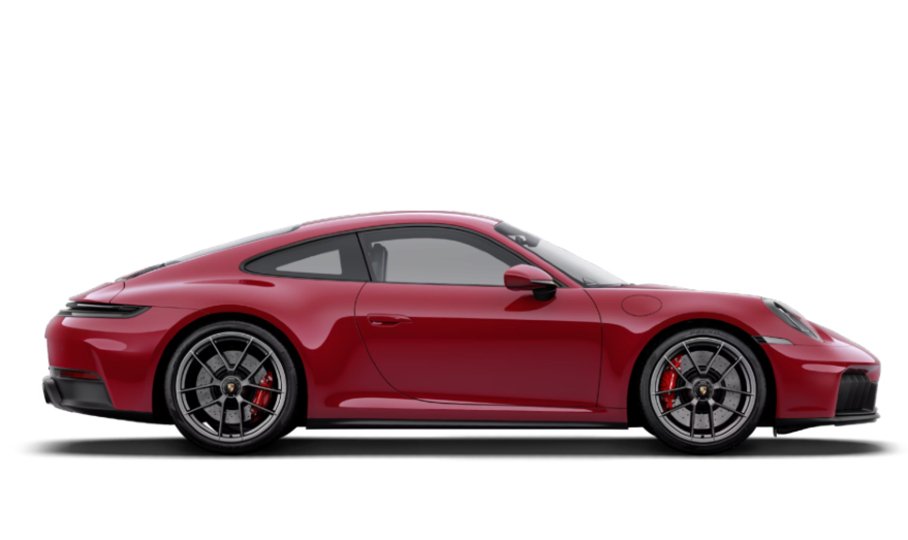
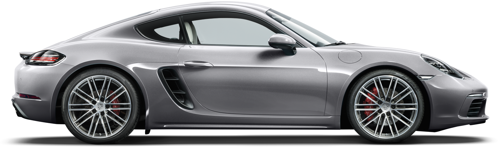
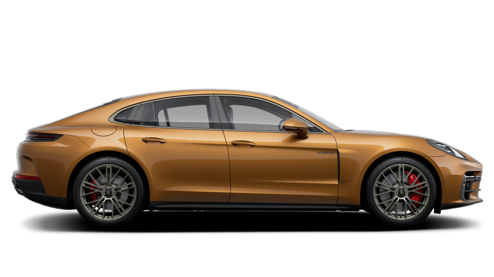
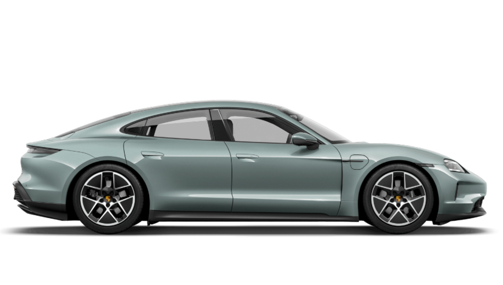
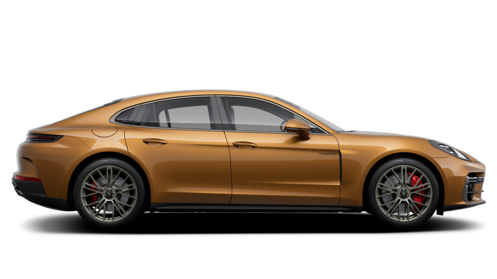
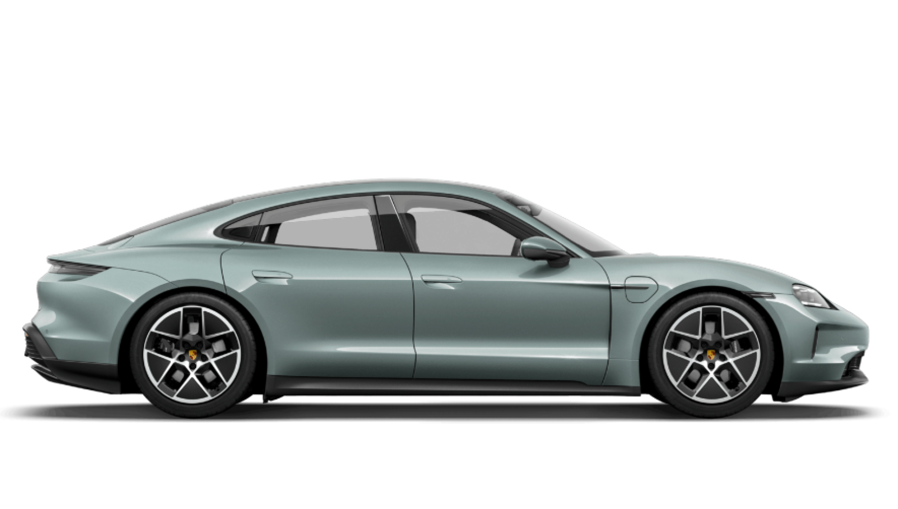
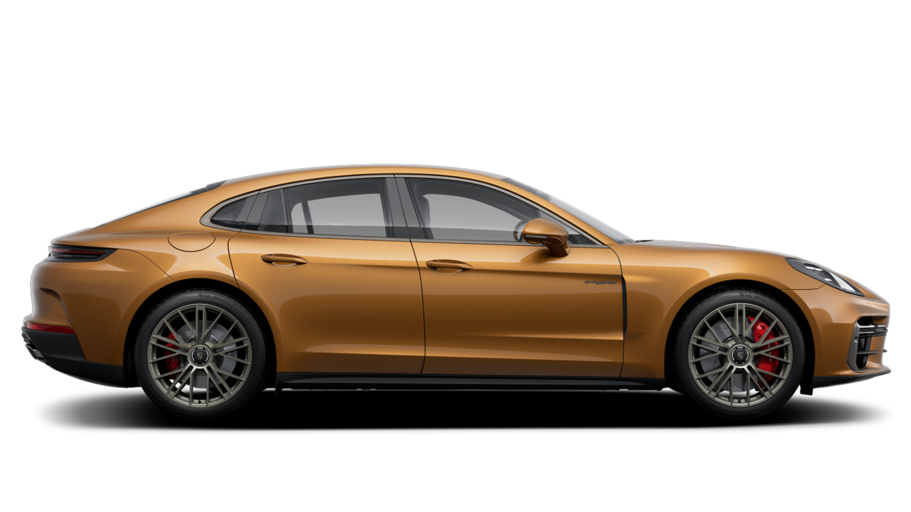
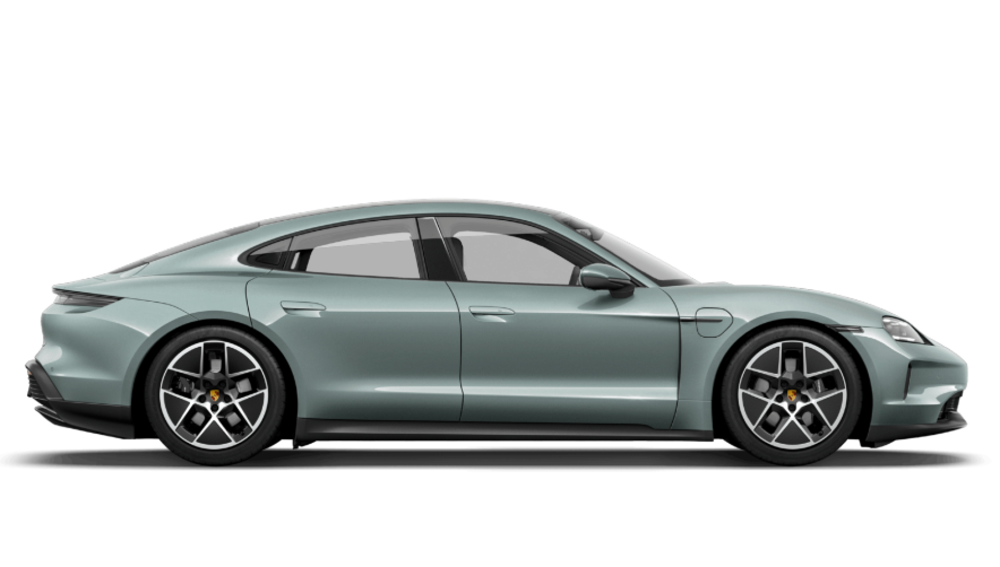
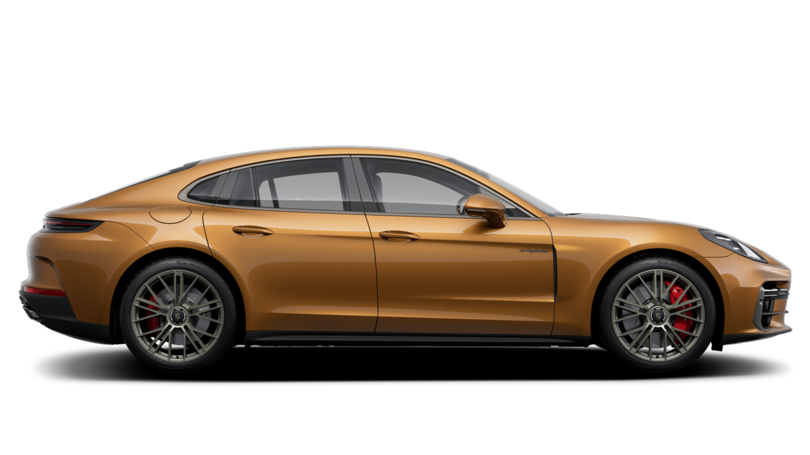
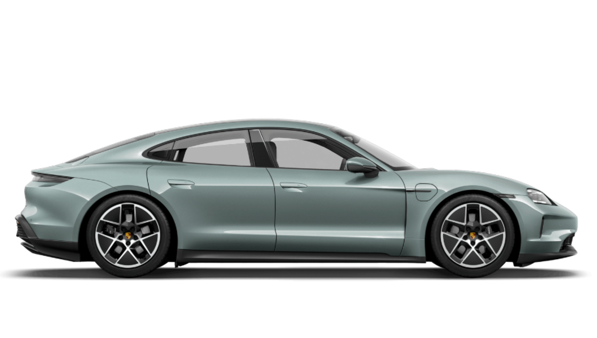

Популярні моделі



 





Кожна модель Porsche має власний характер: від культового 911 до сучасного Taycan. Вони поєднують у собі швидкість, комфорт та інновації.
Інновації, швидкість та легендарний дизайн
Porsche була заснована у 1931 році Фердинандом Порше. Компанія відома своїми спортивними автомобілями, які поєднують інженерну досконалість та емоційний дизайн. Сьогодні Porsche є символом престижу та інновацій у світі автомобілів.
З роками Porsche розширила свій асортимент: від класичних спорткарів до SUV та електромобілів. Її історія – це історія постійного пошуку балансу між традиціями та майбутнім.


Кожна модель Porsche має власний характер: від культового 911 до сучасного Taycan. Вони поєднують у собі швидкість, комфорт та інновації.
Porsche активно впроваджує новітні технології: електричні силові установки, системи рекуперації енергії, цифрові сервіси для водіїв. Компанія інвестує у штучний інтелект та автономне керування.
Серед ключових інновацій – система Porsche Active Suspension Management, адаптивні режими водіння та інтеграція з мобільними додатками.
Porsche має легендарну історію у світі автоспорту. Компанія здобула понад 30 перемог у 24 Hours of Le Mans, брала участь у Формулі-1 та інших престижних змаганнях.
Моторспорт для Porsche – це не лише змагання, а й лабораторія інновацій, де нові технології тестуються та вдосконалюються.
"Я не міг знайти спортивний автомобіль своєї мрії, тому створив його сам." – Фердинанд Порше
"Porsche – це більше ніж автомобіль. Це спосіб життя." – сучасні ентузіасти
"Кожен Porsche – це поєднання інженерії та емоцій." – інженери компанії
Офіційний сайт: porsche.com
Email: info@porsche.com
Адреса: Porscheplatz 1, 70435 Stuttgart, Німеччина
Телефон: +49 711 911-0